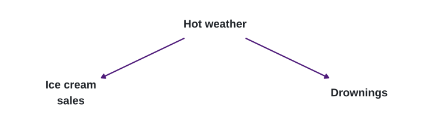
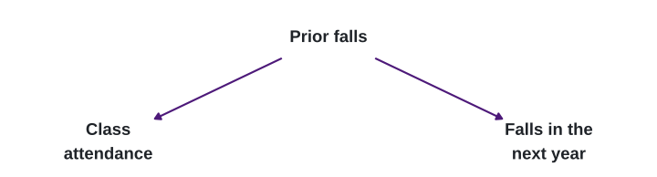

Ecologic Studies and Confounding
APHS 20203 · Epidemiology & Biostatistics
Hierarchy of Study Designs

Ecologic Studies
Ecologic studies compare groups, such as cities, schools, or countries.
Researchers analyze group characteristics, such as average income and average blood pressure.
They can describe population patterns and investigate questions about policies or environments.
A relationship between groups does not necessarily describe the relationship between individuals.
Unit of Observation vs. Unit of Analysis
Hypothetical example: Measure residents’ income and blood pressure, then compare city averages.
| Term | What Does It Mean? | In This Example |
|---|---|---|
| Unit of observation | The entity we collect measurements from | Each resident |
| Unit of analysis | The entity we compare and draw conclusions about | Each city |
The same individual measurements could support a different analysis that compares residents instead of cities.
Ecologic Fallacy
Ecologic fallacy: Assuming a relationship between groups also holds for individuals.

City averages alone do not reveal the relationships within cities.
Practice: What Can We Conclude?
Suppose we have only the city averages from the previous slide. Which conclusion is supported?
A. Increasing a person’s income raises their blood pressure.
B. Within each city, richer residents have higher blood pressure.
C. Cities with higher average income have higher average blood pressure.
D. Income has no relationship with anyone’s blood pressure.
When the Population Is the Question
Hypothetical question: After cities adopt a smoke-free indoor-air policy, do their heart-attack admission rates decline compared with cities that do not?
Exposure: A city policy that changes the shared environment.
Outcome: The city’s admission rate over time.
Why study groups? We want to evaluate the policy’s overall population effect, including effects on people who do not smoke.
The analysis must still consider other changes occurring in those cities.
Dietary Fat and Breast Cancer Mortality
The question: Could differences in diet help explain why breast cancer death rates differ across countries?
Sasaki et al. (1993)
Design: Ecologic study of 30 countries, using data from 1961 to 1986.
Exposure: National food-supply estimates per person, separated by fat type.
Outcome: Female breast cancer mortality rates.
Finding: Animal fat excluding fish fat was positively associated with mortality among women aged 50 and older. Fish fat showed inverse associations when statistically significant.
The country averages do not tell us what the women who died had eaten.
Low-Fat Dietary Pattern: Randomized Trial
A related question: Does assignment to a dietary program reduce new breast cancers?
Prentice et al. (2006)
Participants: 48,835 postmenopausal women, ages 50–79, without prior breast cancer.
Intervention: A program to reduce total fat and increase fruit, vegetables, and grains; comparison participants were not asked to change their diet.
Outcome: New invasive breast cancers during an average 8.1 years of follow-up.
2006 result: The intervention did not produce a statistically significant reduction in invasive breast cancer incidence.
Ecologic Studies: Strengths and Limitations
Strengths
- Fit questions about population policies and environments
- Reveal patterns across places or time
- Can use existing data efficiently
Limitations
- Group associations may not describe individuals
- Averages can hide differences within groups
- Other population differences can complicate interpretation
Choose the design that fits the question and the level of the conclusion.
Group Discussion: Comparing Study Designs
Work in groups of 2–3 for 4 minutes. Prepare a brief explanation for each question.
| Ecologic Study | Randomized Trial | |
|---|---|---|
| Unit of analysis | Countries | Individual women |
| Exposure / intervention | National supply of different fats | Assignment to a dietary program |
| Outcome | Breast cancer mortality | Invasive breast cancer incidence |
- Why does the ecologic study not tell us whether changing one woman’s diet would change her risk?
- What does random assignment add, and what dietary question does this trial actually test?
- Why would it be misleading to say that this trial simply proves or disproves the ecologic study?
From Study Design to Trustworthy Comparisons
The two dietary studies asked different questions. For either study, we still need to ask what could make the comparison misleading.
- Selection: Who entered the study, and who stayed in it?
- Information: Were exposure and outcome measured accurately?
- Confounding: Did the groups differ in other causes of the outcome?
We will connect these questions to the bias examples from the case-control lecture.
Hawthorne Effect
- Definition: People change their behavior because they know they are being observed.
- Example: Participants walk more while a research team monitors their activity.
- Their recorded activity may be accurate, but it may differ from their usual activity.
Changing behavior and reporting behavior inaccurately are different problems.
Practice: Bias and Behavior Changes
For each scenario, identify the bias or behavior change and explain why.
Parents of sick children recall pesticide exposure during pregnancy more carefully than parents of healthy children.
Participants underreport alcohol use because they worry that the interviewer will judge them.
Outcome assessors know who received treatment and rate those participants more favorably.
Interviewers ask lung cancer cases more detailed exposure questions than they ask controls.
Participants exercise more because they know their activity is being monitored.
Review: Sample Size and Bias
- Random error (sampling variability): Results vary by chance. More observations generally improve precision.
- Bias: A systematic problem in selection or measurement can remain even in a very large study.
Example: Interviewing more people at local gyms does not fix the problem of estimating community activity from a sample that overrepresents gym users.
For bias, improve who is included or how measurements are made. Increasing the sample size alone does not repair those processes.
Review: Confounding
Confounding: Other causes of the outcome get mixed into our estimate of the exposure’s effect. We may give credit or blame to the wrong variable.
Would reducing ice cream sales reduce drownings? This pattern alone does not show that it would.
Practice: Does the Class Increase Falls?
Hypothetical study: Follow 200 people for one year after some choose to attend a fall-prevention class.
| People With at Least One Fall | People Followed | One-Year Risk | |
|---|---|---|---|
| Attended class | 28 | 100 | 28% |
| Did not attend | 12 | 100 | 12% |
Which conclusion is justified?
A. The class caused more falls.
B. Attendees had more falls, but they may have differed before class.
C. The class prevented falls.
Comparing People With the Same Fall History
The same 200 people, now separated by whether they had fallen before the class began:
| No Prior Fall | Prior Fall | All Participants | |
|---|---|---|---|
| Attended class | 1 / 10 = 10% | 27 / 90 = 30% | 28 / 100 = 28% |
| Did not attend | 9 / 90 = 10% | 3 / 10 = 30% | 12 / 100 = 12% |
- Within each history group, the risks are the same.
- Attendees included more people with prior falls: 90% versus 10%.
Accounting for fall history removes the apparent difference in this example.
Prior Falls and Class Attendance
In our hypothetical study, prior falls can influence both class attendance and the chance of falling again.

In this hypothetical example, assume the class has no effect on falls.
The groups’ different fall histories explain the overall difference in risk.
Practice: Which Variable Needs Attention?
A study compares people who choose a fall-prevention class with people who do not.
Researchers learn that prior falls influence class attendance and the chance of another fall.
What is the best reason to consider prior falls when making the comparison?
A. We should control for every variable available.
B. Prior falls are a plausible common cause of attendance and later falls.
C. Any variable associated with the outcome must be controlled.
Addressing Confounding During Study Design
| Approach | Basic Idea | Example |
|---|---|---|
| Randomization | Assign the intervention by chance | Randomly offer the class |
| Restriction | Limit a relevant characteristic | Enroll only people with no prior falls |
| Matching | Select comparison participants with similar characteristics | Match participants on fall history |
Randomization balances baseline factors on average, including factors we did not measure.
Restriction narrows the population studied. Matching still requires an appropriate analysis.
Addressing Confounding During Analysis
Stratification: Compare exposed and unexposed people within categories of a confounder, as in the fall-history table.
Statistical adjustment: Use methods such as regression or standardization to account for appropriate measured factors.
Both approaches depend on choosing relevant variables and measuring them adequately.
When reading a study, ask: What did the researchers account for, why did they choose those factors, and what important differences might remain?
Epidemiology Wrap-Up
Define and explain the foundations of epidemiology
Measure disease using incidence, prevalence, and rates
Describe patterns by person, place, and time
Evaluate association and causality
Distinguish cohort and case-control study designs
Interpret RR, ARD, and OR
Identify major sources of bias and confounding
From Concepts to Your Presentation
The Conceptual Progression
Descriptive epidemiology: Describe patterns and generate hypotheses.
Analytic epidemiology: Evaluate exposure–outcome relationships.
Critical thinking: Distinguish association from causation.
For Group Presentation 1
Describe population patterns using appropriate epidemiologic measures.
Include and cite at least one source of analytic evidence.
Explain the evidence type, exposure, outcome, and main finding.
Relate the evidence to your findings; discuss limitations, bias, and confounding.
Avoid definitive causal claims or policy recommendations.
Use the assignment instructions and rubric in D2L for the full requirements.
References
Centers for Disease Control and Prevention. 2024. “Designing and Conducting Analytic Studies in the Field.” https://www.cdc.gov/field-epi-manual/php/chapters/design-conduct-analyze-field-studies.html.
DeCarlo, Matthew. 2018. “7.3 Unit of Analysis and Unit of Observation.” Scientific Inquiry in Social Work. https://pressbooks.pub/scientificinquiryinsocialwork/chapter/7-3-unit-of-analysis-and-unit-of-observation/.
Dicker, Richard C. 2025. “Analyzing and Interpreting Data.” Centers for Disease Control; Prevention, January 6. https://www.cdc.gov/field-epi-manual/php/chapters/analyze-interpret-data.html.
Hernán, Miguel A., Sonia Hernández-Díaz, Martha M. Werler, and Allen A. Mitchell. 2002. “Causal Knowledge as a Prerequisite for Confounding Evaluation: An Application to Birth Defects Epidemiology.” American Journal of Epidemiology 155 (2): 176–84. https://doi.org/10.1093/aje/155.2.176.
Prentice, Ross L., Bette Caan, Rowan T. Chlebowski, et al. 2006. “Low-Fat Dietary Pattern and Risk of Invasive Breast Cancer: The Women’s Health Initiative Randomized Controlled Dietary Modification Trial.” JAMA 295 (6): 629–42. https://doi.org/10.1001/jama.295.6.629.
Sasaki, S., M. Horacsek, and H. Kesteloot. 1993. “An Ecological Study of the Relationship Between Dietary Fat Intake and Breast Cancer Mortality.” Preventive Medicine 22 (2): 187–202. https://doi.org/10.1006/pmed.1993.1016.

Social Desirability Bias